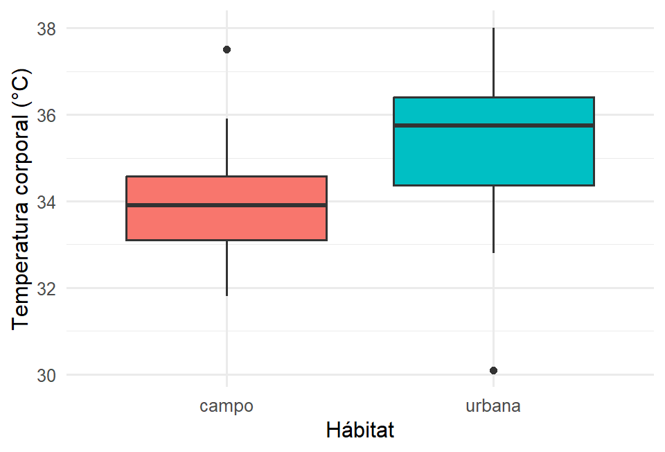
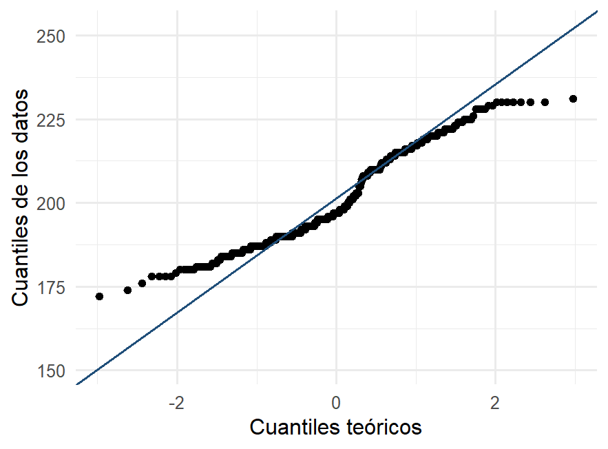
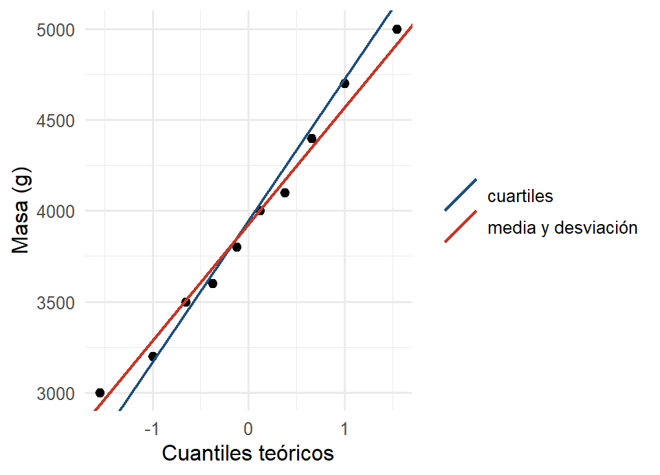

mean(penguins$body_mass_g, na.rm = TRUE) # media
#> [1] 4201.754
median(penguins$body_mass_g, na.rm = TRUE) # mediana
#> [1] 40502 Análisis numérico de datos
AdvertenciaCapítulo en revisión
El contenido de este capítulo está completo, pero todavía no pasa por la revisión final de redacción. Se avisará en clase cuando quede listo para estudiar de aquí. Mientras tanto se puede consultar, con esa advertencia.
TipObjetivos del capítulo
- Resumir una variable cuantitativa con medidas de localización y de dispersión.
- Elegir entre media y mediana según la forma de los datos.
- Leer y comparar diagramas de caja entre grupos.
- Evaluar si unos datos parecen normales con un Q-Q plot.
- Producir resúmenes por grupo con
dplyr.
En el Capítulo 1 aprendimos a ver la distribución de una variable con gráficas. Ahora la resumimos con números: un centro y una medida de qué tan dispersos están los datos alrededor de ese centro. Seguimos con los pingüinos y estrenamos las lagartijas.
2.1 Medidas de localización: ¿dónde está el centro?
Hay tres medidas de centro de uso común: la media (el promedio), la mediana (el valor que deja la mitad de los datos por debajo) y la moda (el valor que más se repite).
La moda es la única de las tres que también tiene sentido en variables categóricas (la especie más frecuente, la marca más elegida). R no trae una función directa para calcularla, pero se obtiene con una tabla de frecuencias:
table(penguins$species) # moda de una variable categórica
#>
#> Adelie Chinstrap Gentoo
#> 152 68 124
frecuencias <- table(galletas$agrado)
frecuencias
#>
#> 3 4 5 6 7 8 9
#> 2 10 23 19 24 15 7
names(frecuencias)[which.max(frecuencias)] # valor más repetido
#> [1] "7"Una distribución puede no tener moda (si ningún valor se repite), tener una (unimodal) o varias (bimodal, multimodal). Las dos jorobas que se veían en la masa de los pingüinos son justamente una distribución bimodal.
ImportanteLos datos faltantes (NA)
Los pingüinos tienen algunas mediciones faltantes (NA). Si no le decimos a R qué hacer con ellas, mean() devuelve NA. Por eso usamos na.rm = TRUE (“remueve los NA”). Siempre conviene preguntarse por qué faltan: no es lo mismo un dato perdido al azar que uno que falta por una razón sistemática.
Los cuartiles parten los datos en cuatro: el primer cuartil (Q1) deja abajo el 25 %, el segundo es la mediana (50 %) y el tercero (Q3) el 75 %.
quantile(penguins$body_mass_g, na.rm = TRUE, type = 6)
#> 0% 25% 50% 75% 100%
#> 2700.00 3550.00 4050.00 4756.25 6300.00Media o mediana, ¿cuál reporto? La media usa el valor exacto de cada dato, así que un valor extremo la jala hacia sí. La mediana solo mira la posición, por lo que es robusta ante valores atípicos y colas largas. Por eso los ingresos o los precios de casas (muy sesgados a la derecha) se resumen con la mediana.
NotaInterpretación
En una distribución sesgada a la derecha (cola larga hacia los valores altos, como los salarios), la media queda arriba de la mediana. En una simétrica, coinciden. Comparar media y mediana ya nos dice algo sobre la forma, sin graficar.
2.1.1 Laboratorio: por qué la mediana es robusta
Aquí se ve la diferencia entre media y mediana mejor que en cualquier fórmula. Se tienen nueve datos fijos y uno que puede moverse con el deslizador. Conviene observar qué le pasa a cada medida cuando ese dato se va lejos.
NotaInterpretación
Al arrastrar el dato hacia valores grandes, la media lo persigue sin límite: un solo dato extremo la arrastra. La mediana apenas se mueve y luego se queda quieta, porque solo le importa la posición de los datos, no su magnitud. Eso es ser robusta. Por eso, cuando alguien reporte un promedio de salarios, de precios de vivienda o de tiempos de espera, la primera pregunta debe ser: ¿y la mediana?
2.2 Medidas de dispersión: ¿qué tan esparcidos están?
Dos grupos pueden tener el mismo centro y ser muy distintos. Lo que los diferencia es la dispersión:
- Rango: máximo menos mínimo (sensible a un solo dato extremo).
- Varianza y desviación estándar: qué tan lejos, en promedio, están los datos de la media. La desviación estándar (
sd) está en las mismas unidades que los datos, así que es la más interpretable. - Rango intercuartílico (RIC):
Q3 − Q1, el ancho del 50 % central; robusto, como la mediana.
sd(penguins$body_mass_g, na.rm = TRUE) # desviación estándar (g)
#> [1] 801.9545
var(penguins$body_mass_g, na.rm = TRUE) # varianza (g^2)
#> [1] 643131.1
IQR(penguins$body_mass_g, na.rm = TRUE, type = 6) # rango intercuartílico
#> [1] 1206.25Dos propiedades de la varianza son útiles (y salen en exámenes):
x <- c(2, 4, 6, 8)
var(x) # referencia
#> [1] 6.666667
var(x + 100) # SUMAR una constante NO cambia la dispersión
#> [1] 6.666667
var(x * 2) # MULTIPLICAR por k multiplica la varianza por k^2 (aquí, x4)
#> [1] 26.666672.2.1 El mismo cálculo a mano
Conviene hacer una vez con lápiz y papel lo que R resuelve en una línea. Tomemos siete temperaturas de lagartijas, ya ordenadas:
\[33.8,\; 34.2,\; 35.1,\; 35.4,\; 35.9,\; 36.3,\; 37.1\]
La media. Se suman los siete valores (\(\sum x_i = 247.8\)) y se divide entre \(n = 7\):
\[\bar{x} = \frac{247.8}{7} = 35.40\]
La varianza. En vez de restar la media a cada dato, conviene usar la fórmula de cálculo, que solo necesita dos sumas: la de los datos y la de sus cuadrados (\(\sum x_i^2 = 8780.16\)):
\[s^2 = \frac{1}{n-1}\left[\sum x_i^2 - n\bar{x}^2\right] = \frac{8780.16 - 7(35.40)^2}{6} = \frac{8.04}{6} = 1.340\]
de donde \(s = \sqrt{1.340} = 1.158\).
Los cuartiles. Se localizan por su posición en los datos ordenados:
\[\text{Pos}(q_1) = \frac{n+1}{4} = \frac{8}{4} = 2, \qquad \text{Pos}(q_2) = \frac{n+1}{2} = 4, \qquad \text{Pos}(q_3) = \frac{3(n+1)}{4} = 6\]
Las posiciones caen en números enteros, así que se leen directo: \(q_1 = 34.2\) (segundo dato), \(q_2 = 35.4\) (cuarto) y \(q_3 = 36.3\) (sexto). El rango intercuartílico es \(RI = 36.3 - 34.2 = 2.1\).
Las barreras del diagrama de caja.
\[f_1 = q_1 - 1.5\,RI = 34.2 - 3.15 = 31.05, \qquad f_3 = q_3 + 1.5\,RI = 36.3 + 3.15 = 39.45\]
Ningún dato queda fuera de esas barreras, así que no hay valores atípicos.
Comprobación en R:
temps <- c(33.8, 34.2, 35.1, 35.4, 35.9, 36.3, 37.1)
c(media = mean(temps), varianza = var(temps), desviacion = sd(temps))
#> media varianza desviacion
#> 35.400000 1.340000 1.157584
quantile(temps) # convención de fábrica de R
#> 0% 25% 50% 75% 100%
#> 33.80 34.65 35.40 36.10 37.10
quantile(temps, type = 6) # la del cálculo a mano
#> 0% 25% 50% 75% 100%
#> 33.8 34.2 35.4 36.3 37.1
NotaInterpretación
La media, la varianza y la desviación coinciden exactamente. Los cuartiles no, y conviene entender por qué.
La fórmula de cálculo de la varianza existe precisamente para hacerla con calculadora, porque solo requiere acumular \(\sum x_i\) y \(\sum x_i^2\) mientras se capturan los datos.
Con los cuartiles hay un asunto de fondo. Localizarlos por la posición \((n+1)p\), como se hizo arriba, es una convención entre varias. R implementa nueve, y la que trae de fábrica usa la posición \((n-1)p + 1\). Con estos siete datos, la de fábrica devuelve \(q_1 = 34.65\) y \(q_3 = 36.1\), de donde \(RI = 1.45\) en lugar de \(2.1\).
Ninguna de las dos es incorrecta. Para reproducir en R el cálculo manual se pide quantile(x, type = 6), y lo mismo con IQR(x, type = 6). La mediana siempre coincide, porque las dos fórmulas dan la misma posición cuando \(p = 0.5\); la discrepancia solo aparece en \(q_1\) y \(q_3\), y se encoge conforme crece \(n\).
Lo importante es la disciplina de siempre: saber cuál convención se está usando y declararla si el número se reporta.
Y nótese que el divisor de la varianza es \(n-1\) y no \(n\). Esa corrección hace que \(s^2\) sea un estimador insesgado de la varianza poblacional, tema que se retomará en el Capítulo 7.
Tip¿Qué técnica usar?
Para resumir una variable cuantitativa:
| Si la distribución es… | Centro | Dispersión |
|---|---|---|
| Simétrica, sin atípicos | Media | Desviación estándar |
| Sesgada o con atípicos | Mediana | RIC |
Conviene reportar siempre centro y dispersión juntos: un promedio sin su desviación cuenta media historia.
2.2.2 El ancho de clase, otra vez: dos reglas
En el Sección 1.7.1 quedó claro que el ancho de las clases de un histograma es una decisión, y que decisiones distintas cuentan historias distintas. Ahora que tenemos el RIC podemos volver ahí con dos reglas que dan un punto de partida razonable.
La primera parte del rango: repartirlo entre \(k\) clases, con \(k = 1 + \log_2 n\). Es la regla de Sturges, y es la que R usa de fábrica.
\[\text{ancho}_{\text{Sturges}} = \frac{\text{máx} - \text{mín}}{1 + \log_2 n}\]
La segunda parte del RIC, y es la de Freedman–Diaconis:
\[\text{ancho}_{\text{FD}} = \frac{2 \cdot RIC}{\sqrt[3]{n}}\]
Las dos son razonables. La diferencia aparece cuando hay un dato disparatado, y vale la pena verla con un caso concreto: en las 62 lagartijas, supóngase que la temperatura más alta se capturó con un cero de más.
lagartijas <- read.csv("datos/lagartijas.csv")
temp <- lagartijas$temp_corporal
mal <- temp
mal[which.max(mal)] <- 60 # el error de captura
ancho_sturges <- function(x) diff(range(x)) / (1 + log2(length(x)))
ancho_fd <- function(x) 2 * IQR(x, type = 6) / length(x)^(1/3)
data.frame(
medida = c("rango", "RIC", "ancho por Sturges", "ancho por Freedman-Diaconis"),
sin_error = c(diff(range(temp)), IQR(temp, type = 6),
ancho_sturges(temp), ancho_fd(temp)),
con_error = c(diff(range(mal)), IQR(mal, type = 6),
ancho_sturges(mal), ancho_fd(mal))
) |> knitr::kable(digits = 3)| medida | sin_error | con_error |
|---|---|---|
| rango | 7.900 | 29.900 |
| RIC | 2.425 | 2.425 |
| ancho por Sturges | 1.136 | 4.300 |
| ancho por Freedman-Diaconis | 1.225 | 1.225 |
NotaInterpretación
El ancho de Sturges casi se cuadruplica, y el de Freedman–Diaconis no se mueve ni un milímetro.
La razón está en el renglón de arriba de cada uno. El rango se calcula con el máximo y el mínimo, y el dato falso es justamente el máximo: basta un valor para arrastrarlo. El RIC se calcula con \(q_1\) y \(q_3\), y el dato más grande no interviene en ninguno de los dos; cambiarlo por un disparate los deja intactos.
Es la robustez de la mediana, que ya se vio en el Sección 2.1.1, apareciendo ahora en una gráfica. Y tiene una consecuencia práctica: con el ancho de Sturges ese histograma se aplasta en tres o cuatro barras y deja de mostrar la forma, mientras que el de Freedman–Diaconis sigue dibujando la distribución de las 61 lagartijas bien capturadas, con el dato falso aparte, a la derecha, donde se puede ver que algo está mal.
AdvertenciaUna regla no sustituye a mirar
Ninguna de las dos reglas sabe qué se está buscando. En el laboratorio del Sección 1.7.1, los dos montículos de la masa de los pingüinos aparecen y desaparecen según el ancho, y ninguna fórmula puede decidir por nosotros si esos montículos importan. Las reglas dan un punto de partida; la disciplina sigue siendo probar varios anchos antes de concluir.
2.3 El diagrama de caja (boxplot)
El boxplot resume una variable con cinco números: mínimo, Q1, mediana, Q3 y máximo. La caja abarca el 50 % central (su alto es el RIC), la línea de en medio es la mediana, y los puntos fuera de los “bigotes” son posibles valores atípicos (más allá de 1.5 × RIC).
Su verdadero poder es comparar grupos. Veámoslo con las lagartijas: temperatura corporal en zona urbana vs. campo abierto.
ggplot(lagartijas, aes(x = habitat, y = temp_corporal, fill = habitat)) +
geom_boxplot() +
labs(x = "Hábitat", y = "Temperatura corporal (°C)") +
theme(legend.position = "none")
NotaInterpretación
La caja urbana está claramente más arriba: las lagartijas de ciudad son más cálidas (isla de calor urbana). También parece un poco más alta (más dispersión). Esto es descripción: la gráfica dice cómo se ven estos datos, no si la diferencia se sostendría con otras lagartijas. Para decidir eso hay procedimientos formales, y se verán en el Capítulo 9. Un boxplot es el mejor preludio de una comparación de dos grupos.
2.3.1 Las barreras, y las dos clases de atípico
Arriba se dijo que los puntos dibujados aparte son “posibles atípicos, más allá de 1.5 × RIC”. Conviene precisarlo, porque el boxplot distingue dos grados y la distinción cambia lo que uno hace después.
A partir de los cuartiles se levantan dos pares de barreras:
\[\text{barreras interiores} = q_1 - 1.5\,RIC \quad\text{y}\quad q_3 + 1.5\,RIC\] \[\text{barreras exteriores} = q_1 - 3\,RIC \quad\text{y}\quad q_3 + 3\,RIC\]
Y con ellas, tres situaciones para un dato:
| Dónde cae | Cómo se llama | Cómo se dibuja |
|---|---|---|
| Dentro de las barreras interiores | Dato ordinario | Lo alcanza un bigote |
| Entre la interior y la exterior | Atípico suave | Punto aparte |
| Más allá de la exterior | Atípico extremo | Punto aparte |
Los bigotes, entonces, no llegan hasta las barreras: llegan hasta el dato más alejado que todavía cae dentro de ellas. Por eso los bigotes de un boxplot casi nunca son igual de largos.
Veámoslo con la masa de las lagartijas:
m <- lagartijas$masa_g
q1 <- unname(quantile(m, 0.25, type = 6)) # unname: quantile devuelve el nombre "25%"
q3 <- unname(quantile(m, 0.75, type = 6))
ric <- q3 - q1
barreras <- c(interior_inf = q1 - 1.5 * ric, interior_sup = q3 + 1.5 * ric,
exterior_inf = q1 - 3 * ric, exterior_sup = q3 + 3 * ric)
round(barreras, 3)
#> interior_inf interior_sup exterior_inf exterior_sup
#> 6.187 20.288 0.900 25.575
sort(m[m < barreras["interior_inf"] | m > barreras["interior_sup"]]) # atípicos suaves
#> [1] 5.3
sort(m[m < barreras["exterior_inf"] | m > barreras["exterior_sup"]]) # atípicos extremos
#> numeric(0)
NotaInterpretación
Hay un solo dato fuera de las barreras interiores, la lagartija de 5.3 gramos, y ninguno fuera de las exteriores. Es un atípico suave.
Esa palabra tiene consecuencias prácticas. Un atípico suave suele ser un dato legítimo de la cola de la distribución: una lagartija chica, quizá juvenil, que pertenece a la población y no se toca. Uno extremo, en cambio, merece que se revise si hubo un error de captura antes de hacer cualquier otra cosa; es lo que pasó con la temperatura de 60 grados del Sección 2.2.2, que queda muy por fuera de la barrera exterior.
Un atípico nunca se borra por ser atípico. Se investiga, y se decide con la razón que se encuentre.
Advertencia
geom_boxplot() usa la otra convención
Las barreras de arriba se calcularon con type = 6, la convención del cálculo a mano. geom_boxplot() y boxplot() usan la de fábrica de R, así que sus barreras salen ligeramente distintas de las de este cuadro.
En estos datos la conclusión no cambia —las dos convenciones señalan la misma lagartija y solo esa—, y eso es lo habitual: la convención mueve el número, rara vez la lectura. Pero si el examen pide las barreras a mano, el número que se espera es el de type = 6.
2.4 Forma de una distribución y el Q-Q plot
Además del centro y la dispersión, nos importa la forma: ¿simétrica?, ¿sesgada?, ¿acampanada? Muchas técnicas que veremos más adelante suponen que los datos son aproximadamente normales, así que conviene saber revisarlo desde ahora. El Q-Q plot (“cuantil-cuantil”) es la herramienta para revisarlo: si los puntos caen cerca de una recta, los datos son compatibles con una normal.
ggplot(penguins, aes(sample = flipper_length_mm)) +
stat_qq() +
stat_qq_line(color = "#1F4E79") +
labs(x = "Cuantiles teóricos", y = "Cuantiles de los datos")
NotaInterpretación
Si los puntos siguen la recta, no hay evidencia contra la normalidad. Desviaciones sistemáticas en los extremos indican colas más pesadas o más ligeras; una curvatura en forma de “S” o de arco delata sesgo. El Q-Q plot será nuestro chequeo de rutina antes de cualquier prueba que suponga normalidad.
2.4.1 Cómo se construye
La gráfica anterior sale de una línea de código, pero conviene saber qué hace esa línea, porque de ahí se entiende qué se está comparando y por qué la recta es la recta.
La idea de fondo es esta: si los datos vinieran de una normal, el dato que ocupa el lugar \(i\) de la lista ordenada debería caer más o menos donde una normal pone su cuantil de la misma proporción. El Q-Q plot pone esos dos números como coordenadas de un punto, y repite para cada dato. Si el parecido es bueno, los puntos se alinean.
Son cuatro pasos:
- Ordenar los datos de menor a mayor.
- Asignarle a cada uno una proporción \(p_i\).
- Convertir esa proporción en el cuantil teórico \(z_i\) de la normal estándar, el valor que deja \(p_i\) de área a su izquierda.
- Graficar los pares \((z_i,\, x_i)\).
El único paso que necesita explicación es el segundo. Lo natural sería contar: por debajo del \(i\)-ésimo dato, contándolo a él, quedan \(i\) de los \(n\), así que la proporción sería \(i/n\). Esa cuenta no se puede usar, y la razón se ve en el último dato: le tocaría \(n/n = 1\), o sea el 100 %, y ninguna normal deja a su izquierda toda el área. El cuantil teórico se iría al infinito y el punto no se podría dibujar.
La salida es correr un poco todas las proporciones hacia adentro. R usa
\[p_i = \frac{i - 3/8}{n + 1/4}\]
que nunca llega ni a 0 ni a 1, y que trata igual a los dos extremos: \(p_1 + p_n = 1\), lo cual importa porque la normal contra la que se compara es simétrica.
Hagámoslo completo con diez masas de pingüino, en gramos, chicas para que quepan a mano:
masas <- c(3000, 3200, 3500, 3600, 3800, 4000, 4100, 4400, 4700, 5000)
data.frame(
i = seq_along(masas),
x_i = masas,
p_i = ppoints(masas), # (i - 3/8) / (n + 1/4)
z_i = qnorm(ppoints(masas)) # el cuantil teorico
) |> knitr::kable(digits = 4)| i | x_i | p_i | z_i |
|---|---|---|---|
| 1 | 3000 | 0.0610 | -1.5466 |
| 2 | 3200 | 0.1585 | -1.0005 |
| 3 | 3500 | 0.2561 | -0.6554 |
| 4 | 3600 | 0.3537 | -0.3755 |
| 5 | 3800 | 0.4512 | -0.1226 |
| 6 | 4000 | 0.5488 | 0.1226 |
| 7 | 4100 | 0.6463 | 0.3755 |
| 8 | 4400 | 0.7439 | 0.6554 |
| 9 | 4700 | 0.8415 | 1.0005 |
| 10 | 5000 | 0.9390 | 1.5466 |
NotaInterpretación
Las proporciones arrancan en 0.061 y terminan en 0.939, nunca en 0 ni en 1, y suman 1 por parejas: la primera con la última, la segunda con la penúltima. Los cuantiles teóricos salen simétricos alrededor de cero por la misma razón.
La columna z_i es el eje horizontal de la gráfica y la columna x_i el vertical. Nótese que los datos entran solo por su orden: las proporciones y los cuantiles teóricos son los mismos para cualquier conjunto de diez datos. Lo único que cambia de un conjunto a otro es a qué altura queda cada punto.
AdvertenciaUn detalle de
ppoints()
Con más de diez datos, R cambia el \(3/8\) por \(1/2\) y usa \(p_i = (i - 0.5)/n\). Las dos fórmulas hacen lo mismo —correr las proporciones hacia adentro— y la gráfica casi no se distingue. El \(3/8\) está afinado para conjuntos chicos.
2.4.2 De dónde sale la recta de referencia
Si los datos fueran exactamente normales con media \(\mu\) y desviación \(\sigma\), el dato de cuantil teórico \(z\) caería en
\[x = \sigma z + \mu\]
que es una recta de pendiente \(\sigma\) y ordenada al origen \(\mu\). Esa es la recta: no es un ajuste a los puntos, es dónde caerían si la normal fuera exacta.
Hay un problema, y es el de siempre: \(\mu\) y \(\sigma\) son de la población, y no se conocen. Hay que estimarlas con los datos, y hay dos maneras razonables de hacerlo.
La primera es la obvia: usar la media y la desviación estándar. La segunda usa los cuartiles, aprovechando que en una normal la distancia entre \(q_1\) y \(q_3\) vale siempre \(1.349\) desviaciones:
\[\text{pendiente} = \frac{q_3 - q_1}{1.349}, \qquad \text{ordenada} = \frac{q_1 + q_3}{2}\]
La segunda es la que traza R con stat_qq_line(). Veamos las dos sobre los mismos diez datos.
q1_masas <- unname(quantile(masas, 0.25, type = 6))
q3_masas <- unname(quantile(masas, 0.75, type = 6))
rectas <- data.frame(
cual = c("cuartiles", "media y desviación"),
pendiente = c((q3_masas - q1_masas) / 1.349, sd(masas)),
ordenada = c((q1_masas + q3_masas) / 2, mean(masas))
)
round(rectas$pendiente, 1) # las dos pendientes
#> [1] 778.4 641.3
round(rectas$ordenada, 1) # las dos ordenadas al origen
#> [1] 3950 3930
ggplot(data.frame(x = masas), aes(sample = x)) +
stat_qq(size = 2) +
geom_abline(data = rectas, inherit.aes = FALSE,
aes(slope = pendiente, intercept = ordenada, colour = cual),
linewidth = 0.8) +
scale_colour_manual(NULL, values = c("cuartiles" = "#1F4E79",
"media y desviación" = "#C0392B")) +
labs(x = "Cuantiles teóricos", y = "Masa (g)")
NotaInterpretación
Con estos datos las dos rectas cuentan la misma historia: la de los cuartiles es \(x = 778.4\,z + 3950\) y la de la media y la desviación, \(x = 641.3\,z + 3930\). Las ordenadas al origen casi coinciden —las dos ponen el centro cerca de 3940 gramos— y las pendientes difieren alrededor de un 20 %, lo bastante para verse pero no para cambiar la lectura. Mientras la distribución sea razonablemente simétrica y sin datos alejados, cualquiera de las dos sirve.
La diferencia aparece cuando hay un dato disparatado. La media y la desviación estándar lo usan y se van con él: la desviación se infla, la pendiente crece y la recta se acuesta. Los cuartiles no lo usan, así que la recta ni se entera. Es otra vez la robustez del Sección 2.1.1, ahora decidiendo la referencia contra la que se juzga la normalidad.
Y por eso R traza la de los cuartiles. Si la recta de referencia se moviera con el mismo dato raro que se quiere detectar, la gráfica perdería su capacidad de delatarlo: el atípico arrastraría la vara con la que se le mide.
TipDos cosas que conviene no confundir
La recta no pasa por el origen ni tiene pendiente 1. Es \(x = \sigma z + \mu\), con las unidades de los datos en el eje vertical. La diagonal \(y = x\) solo aparecería si antes se estandarizaran los datos, y aun así sería una coincidencia de escalas, no el objetivo.
El Q-Q plot no prueba nada. Que los puntos caigan cerca de la recta dice que los datos son compatibles con una normal, no que lo sean. Es una lectura visual, y para conjuntos chicos incluso datos normales de verdad se ven algo torcidos en las puntas. Hay procedimientos formales para esto, que se verán más adelante.
2.4.3 Cómo se lee una desviación
Lo que se busca no es que los puntos toquen la recta, sino que no se desvíen de forma sistemática. Tres patrones vale la pena reconocer:
| Lo que se ve | Qué significa |
|---|---|
| Los puntos suben más rápido que la recta en el extremo derecho, dibujando un arco | Cola larga hacia los valores altos: sesgo a la derecha |
| El arco está del lado izquierdo | Cola larga hacia los valores bajos: sesgo a la izquierda |
| Una “S”: los dos extremos se apartan hacia el mismo lado que su vecino | Colas más pesadas o más ligeras que las de una normal |
| Un escalón en medio, con un tramo casi vacío | Dos grupos mezclados |
Ese último caso es el mismo que apareció con la masa de los pingüinos en el Sección 1.7.1, y la moraleja es idéntica: si el Q-Q plot de un conjunto sale torcido, antes de concluir “no son normales” conviene preguntarse si no serán varios grupos juntos. La normalidad se revisa dentro de cada grupo.
2.5 Resúmenes por grupo con dplyr
Casi siempre queremos resumir por grupo, no en bloque. El patrón de dplyr es group_by() seguido de summarise(), encadenados con el operador |>.
penguins |>
group_by(species) |>
summarise(
n = n(),
media = mean(body_mass_g, na.rm = TRUE),
de = sd(body_mass_g, na.rm = TRUE),
mediana = median(body_mass_g, na.rm = TRUE)
)
AdvertenciaEl renglón que aparece de más
Si la variable por la que se agrupa tiene faltantes, group_by() deja un renglón adicional etiquetado NA con los casos sin clasificar. La función tapply() de R base, en cambio, los descarta sin avisar. Por eso las dos herramientas pueden devolver un número distinto de renglones aunque las medias coincidan exactamente.
Que el resumen avise de los casos sin clasificar es una ventaja, no un defecto. Si se prefiere excluirlos, conviene hacerlo explícito con filter(!is.na(sex)) antes de agrupar, donde el signo ! significa no.
La misma receta compara las lagartijas por hábitat:
lagartijas |>
group_by(habitat) |>
summarise(
n = n(),
temp_media = mean(temp_corporal),
temp_de = sd(temp_corporal)
)Este pequeño cuadro (medias y desviaciones lado a lado) es el resumen que acompañará a toda comparación de grupos en la Parte III.
2.6 Resumen
Aprendimos a describir una variable cuantitativa con un centro (media o mediana) y una dispersión (desviación estándar o RIC), a elegir entre ellas según la forma, a comparar grupos con boxplots y a revisar la normalidad con un Q-Q plot. Con dplyr producimos resúmenes por grupo en dos líneas.
Un hilo atraviesa el capítulo entero: la robustez. La mediana no se mueve con un dato disparatado, el RIC tampoco, y de ahí que el ancho de Freedman–Diaconis aguante lo que el de Sturges no, que las barreras del boxplot se calculen con cuartiles, y que R trace la recta del Q-Q plot con cuartiles en lugar de con la media y la desviación. Es la misma propiedad reapareciendo en cuatro lugares distintos.
Ya sabemos ver y resumir datos; en el Capítulo 3 estudiaremos la relación entre dos variables.
2.7 Ejercicios
Traslación de la varianza. Un conjunto de datos tiene varianza 9. Si a cada valor se le suma 3, ¿cuánto vale la nueva varianza? Verifícalo en R con un vector de la elección.
Escalamiento de la varianza. Si a cada valor de un conjunto con varianza 16 se le multiplica por 2, ¿cuál es la nueva varianza? Justificar con la propiedad correspondiente.
Varianza cero. Si un conjunto de datos tiene varianza igual a cero, ¿qué puede afirmarse sobre sus valores? Da un ejemplo.
Media, mediana y moda. En una distribución de salarios sesgada a la derecha, ordena de menor a mayor la media, la mediana y la moda, y explicar por qué.
Cuartiles en R. Con
datos/lagartijas.csv, calcular la mediana y el RIC demasa_gpara cada hábitat usandogroup_by()+summarise(). ¿Cuál grupo es más disperso?Boxplot e interpretación. Hacer un boxplot de
frec_cardiacapor hábitat. Describir en dos frases lo observado, como si se le explicara a una bióloga.Normalidad. Hacer el Q-Q plot de
eficiencia_biologicadedatos/hongos_sustrato.csv. ¿Los datos parecen normales? ¿Cambia la conclusión al hacerlo por separado para el sustratoaserrin?Las tres medidas sobre el histograma. El ejercicio 4 pide el orden de memoria; este pide verlo. Con
datos/lagartijas.csv, hacer el histograma demasa_gy dibujarle encima tres líneas verticales: la media, la mediana y la moda. Para la moda, tomar el punto medio de la clase más alta del histograma, que es lo más cercano a una moda que tiene una variable continua. ¿Sale el orden que predice el ejercicio 4? ¿Qué tan separadas quedan las tres líneas, y qué dice eso sobre la simetría de esta variable?
TipSoluciones y retroalimentación
1. La nueva varianza sigue siendo 9. Sumar una constante desplaza todos los datos por igual, sin cambiar sus distancias mutuas, y la varianza mide precisamente esas distancias. En R: var(x) y var(x + 3) dan lo mismo. Regla: \(\text{Var}(X + c) = \text{Var}(X)\).
2. La nueva varianza es 64, es decir \(16 \times 2^2\). Multiplicar por \(k\) multiplica la varianza por \(k^2\) (y la desviación estándar por \(|k|\)). Regla: \(\text{Var}(kX) = k^2\,\text{Var}(X)\). Error típico: contestar 32, olvidando que el factor va al cuadrado.
3. Varianza cero significa que todos los valores son idénticos: no hay dispersión alguna. Ejemplo: c(7, 7, 7, 7). Geométricamente, todos los datos coinciden con la media, así que todas las desviaciones son cero. Es el único caso en que la varianza puede valer cero: nunca es negativa.
4. El orden es moda < mediana < media. En un sesgo a la derecha, la cola larga de salarios altos jala la media hacia arriba; la mediana se mueve menos y la moda se queda en el pico de la distribución. Truco para recordar: la media es la más “sensible” y siempre se va hacia la cola.
5. Con group_by(habitat) |> summarise(mediana = median(masa_g), ric = IQR(masa_g, type = 6)) se observa que el grupo urbano tiene mayor RIC: es el más disperso, además de tener mayor masa mediana. Interpretación biológica: la ciudad ofrece condiciones más heterogéneas —zonas de sombra, calor, alimento variable—, lo que se refleja en mayor variabilidad.
6. Se observan cajas con centros distintos, la urbana por encima. Una redacción adecuada: “Las lagartijas urbanas presentan una frecuencia cardiaca mediana mayor que las de campo abierto, y sus valores están algo más dispersos; ambos grupos se traslapan, así que la diferencia es de tendencia, no absoluta.” Lo importante aquí es no afirmar que “todas” las urbanas superan a las de campo: los boxplots se traslapan.
8. Una manera de hacerlo:
h <- hist(lagartijas$masa_g, breaks = 12, plot = FALSE)
moda <- h$mids[which.max(h$counts)] # centro de la clase mas alta
ggplot(lagartijas, aes(x = masa_g)) +
geom_histogram(bins = 12, fill = "#DCE6F1", colour = "#1F4E79") +
geom_vline(xintercept = mean(lagartijas$masa_g), colour = "#C0392B", linewidth = 1) +
geom_vline(xintercept = median(lagartijas$masa_g), colour = "#1D9E75", linewidth = 1) +
geom_vline(xintercept = moda, colour = "#E8871E", linewidth = 1)Con esta variable las tres líneas caen muy cerca unas de otras, señal de una distribución bastante simétrica: no hay una cola que jale la media hacia ningún lado. Conviene repetirlo con una variable claramente sesgada para ver el caso contrario.
Dos advertencias sobre la moda de una variable continua. La primera, que depende del ancho de clase: al cambiar bins, la clase más alta puede ser otra y la moda se mueve. La segunda, que por eso mismo es la menos estable de las tres, y la razón por la que se reporta poco fuera de las variables categóricas. El orden moda < mediana < media del ejercicio 4 es una regla para sesgos pronunciados; con datos casi simétricos las tres se confunden y el orden puede salir cualquiera.
7. El Q-Q plot del conjunto completo muestra desviaciones de la recta, porque los datos mezclan cuatro sustratos con medias distintas (no es una sola población). Al analizar solo aserrin, los puntos se alinean mucho mejor con la recta. Lección clave para todo el curso: la normalidad se verifica dentro de cada grupo, no sobre la mezcla. Este es exactamente el chequeo que haremos antes del ANOVA en el Capítulo 11.